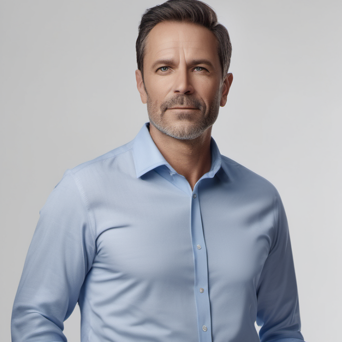

Vi säljer ekologisk frukt i värdsklass odlat nära dig
Fruktbolaget grundades 2016 av Christian Filipsson med en vision om att erbjuda svenska konsumenter högkvalitativ och lokalt producerad frukt. Med ett starkt fokus på hållbarhet och nära samarbeten med svenska
odlare har företaget vuxit stadigt sedan starten. Det började som en mindre verksamhet, men tack vare företagets fokus på kvalitet och pålitliga leveranser har det expanderat och nått kunder över hela Sverige.
Genom effektiv logistik och långsiktiga kundrelationer har Fruktbolaget etablerat sig som en pålitlig aktör på marknaden. Företaget är idag känt för sitt engagemang för miljö och lokalt samarbete, och fortsätter
att växa inom Sveriges gränser.
Vi som arbetar på Fruktbolaget

VD
Christian Filipsson
Christian är företagets grundare och VD, med över 10 års erfarenhet inom livsmedelsindustrin. Han brinner för hållbarhet och ser till att företaget alltid ligger i framkant när det kommer till ekologiska produkter.
Kontakta Christian på christian.filipsson@fruktbolaget.se
Försäljningschef
Linnea Ralmè
linnea.ralme@fruktbolaget.se
Linnea har en bakgrund inom försäljning och marknadsföring och har arbetat som försäljningschef på fruktbolaget i över 5 år. Hon ansvarar för att utveckla kundrelationer och identifiera nya försäljningsmöjligheter
Produktchef
Amina Sellberg
amina.sellberg@fruktbolaget.se
Amina är något av en expert på frukt och ser till att vårt sortiment alltid håller högsta kvalitè. Hon har ett nära sammarbete med lokala odlare för att säkerställa att våra produkter alltid är färska och ekologiska.
Logestikansvarig
Jonathan Book
jonathan.book@fruktbolaget.se
Jonathan är ansvarig för att företagets leveranser fungerar smidigt och effektivt. Han har över 10 års erfarenhet inom logistik och ser till att alla varor transporteras på ett miljövänligt och kostnadseffektivt sätt
Marknadsföringsansvarig
Maria Thomasson
maria.thomasson@fruktbolaget.se
Maria arbetar ständigt med att förbättra Fruktbolagets varumärke. Hon har en gedigen bakgrund inom digital marknadsföring och älskar att hitta nya sätt att nå ut till kunder. Hon ansvarar för både sociala medier, reklamkampanjer och PR.
Ekonomichef
Niklas Karlsson
niklas.karlsson@fruktbolaget.se
Niklas håller koll på företagets finanser och ser till att budgetar följs och att ekonomin är i balans. Med över 12 års erfarenhet inom ekonomi och redovisning är han en trygg och pålitlig resurs.